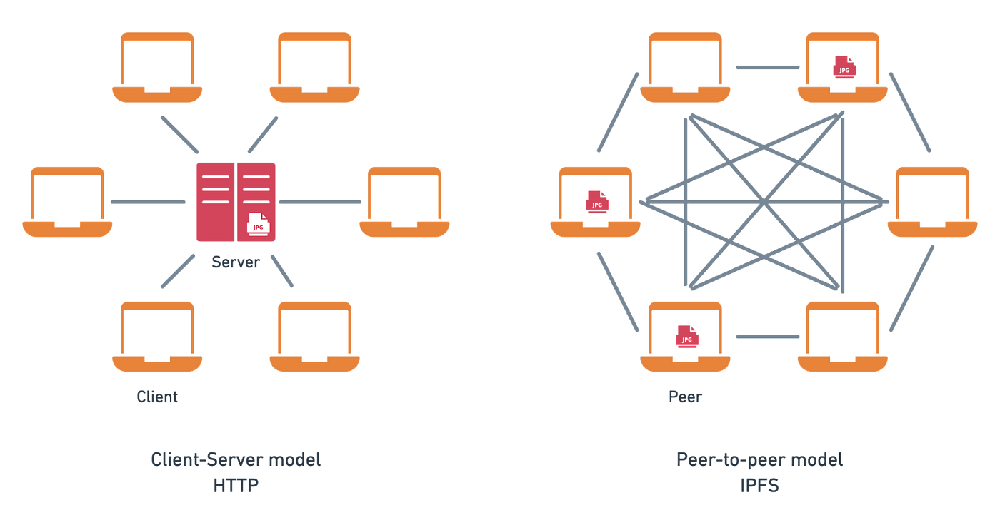
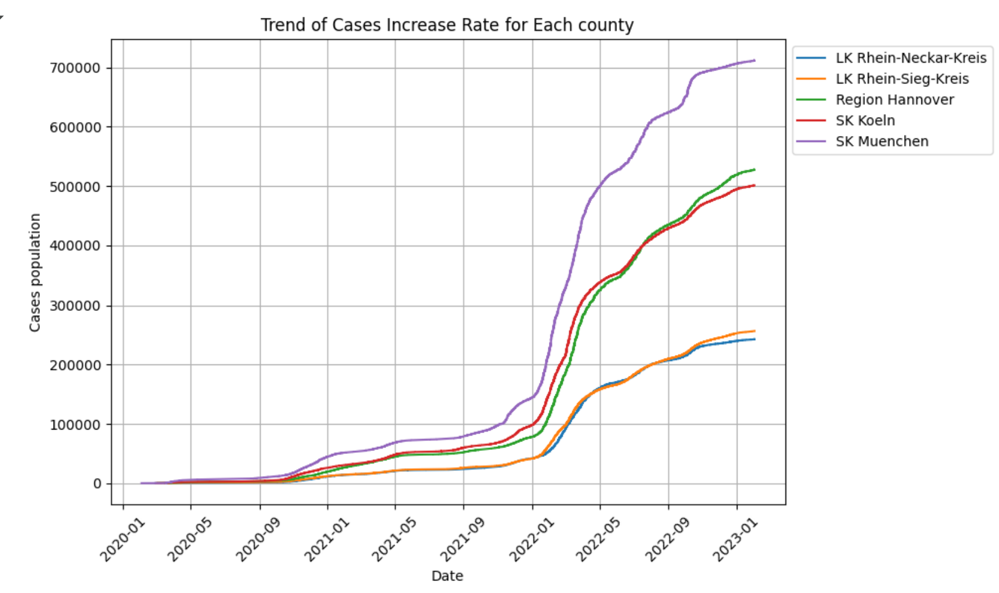
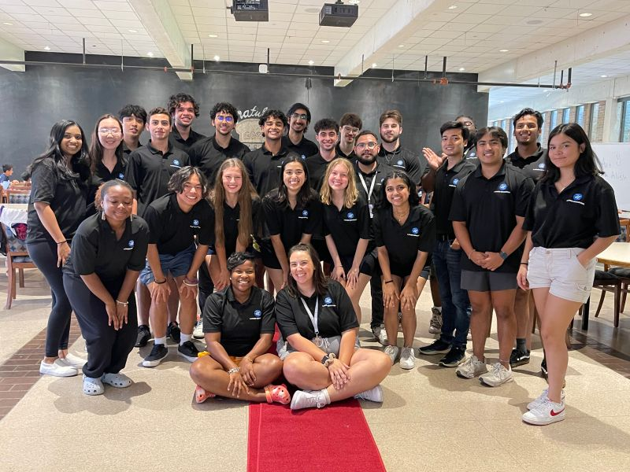

Hali Gulifeiya (Fia)
B.S. of Computer Science @ Stony Brook University
Email: gulifeiya600220@gmail.com
Skills: Python, R, Java, C, Bash, JavaScript, SQL, HTML/CSS Pandas, NumPy, Matplotlib, Seaborn, Power BI, Tableau

About Me
Hello! I’m Hali (Fia) Gulifeiya, a recent Computer Science graduate from SUNY-Stony Brook University with a strong foundation in data analysis, machine learning, and software development. I’m skilled in Python, SQL, and R, with hands-on experience in data visualization tools like Power BI and Tableau, and cloud platforms like AWS and Google Cloud.
My research interest lies in the intersection of big data and machine learning, particularly in developing innovative solutions to complex problems. I have a keen interest in exploring how data-driven insights can enhance decision-making processes across various domains.
Projects
Here are some of the projects I've worked on:
- Decentralized File Transfer System – OrcaCoin Implemented a Proof-of-Work (PoW) mining system by modifying bcoin’s consensus logic and integrating OrcaCoin rewards, resulting in successful mining across test nodes and generation of 1,000+ OrcaCoin tokens in simulation.
- COVID-19 Data Analysis and Prediction Project Conducted an in-depth analysis of COVID-19 data from Germany, exploring death and recovery trends by state, county, gender, and age group.
- Online Movie Rental System Creating a user-friendly and highly intuitive web application for movie rentals by developing the front-end interface using HTML. Optimized data storage and retrieval processes in MySQL, improving query performance and system efficiency for a catalog of 1,000+ movie records.


Professional Experience
- Software Developer Boot Camp Lecturer Designed and developed 4 Object-Oriented Programming (OOP) in-class to introduce students to advanced OOP concepts such as interfaces, libraries, classes, inheritance, and modular functions..
- Data Scientist Intern Developed a custom Python-Pandas interface for automating data preprocessing within bacterial genomics research. The interface enhanced data transformation by sorting, extracting, and merging over 3,000 records across 4 taxonomy levels, improving processing efficiency by 20%.
